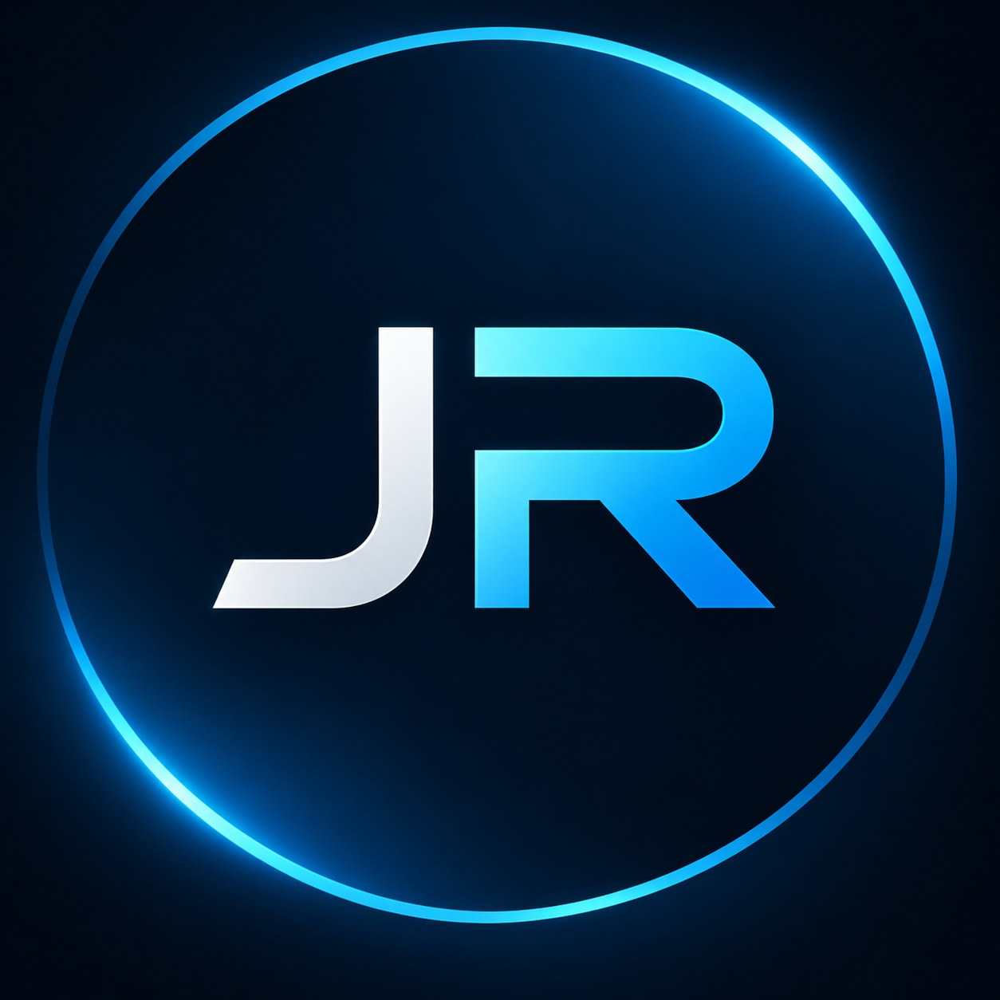

Web
Websites und kleine Web-Projekte – von meinem Portfolio bis zu Browser-Spielen.
Azubi bei GOB Software & Systeme
Angehender Fachinformatiker mit einer Leidenschaft fürs Programmieren – ich probiere gerne neue Technologien und Sprachen aus und setze eigene Ideen in Projekten um.
Mein Name ist Julian Rohde und ich habe 2025 meine Ausbildung zum Fachinformatiker bei der GOB Software & Systeme begonnen.
Meine Begeisterung für die Programmierung begleitet mich bereits seit der 8. Klasse, als ich in der Schule meine ersten Erfahrungen mit dem Programmieren gesammelt habe. Was damals noch ein gelegentliches Hobby war, ist mittlerweile zu einer immer größeren Leidenschaft geworden.
Dabei probiere ich gerne unterschiedliche Technologien, Programmiersprachen und Möglichkeiten der Softwareentwicklung aus, um meinen Horizont stetig zu erweitern. Ich bin stets daran interessiert, neue Bereiche kennenzulernen, eigene Ideen umzusetzen und mich technisch wie persönlich weiterzuentwickeln.

Websites und kleine Web-Projekte – von meinem Portfolio bis zu Browser-Spielen.
Windows-Anwendungen mit grafischer Oberfläche für den eigenen Alltag.
Erste Schritte in der Spieleentwicklung und kleine Spiele für den Browser.
Experimente mit künstlicher Intelligenz und Automatisierung.
Ein Großteil dieser Projekte befindet sich noch in der Entwicklung. Für mich stehen dabei vor allem das Ausprobieren neuer Ideen, praktische Erfahrung und das kontinuierliche Dazulernen im Vordergrund.
Meine eigene Website zur Präsentation meiner Person und meiner Projekte – genau die, auf der du gerade bist.
Mehr erfahren →Eine Windows-Anwendung, mit der ich meine Programme und Anwendungen auf dem PC zentral verwalten kann.
Mehr erfahren →Verschiedene kleine Browser-Spiele für eine Spaßwebsite, die ich gemeinsam mit meinen Ausbildungskollegen betreibe.
Mehr erfahren →Ein experimentelles Projekt, bei dem eine künstliche Intelligenz versucht, Minecraft selbstständig und ohne Eingaben des Spielers durchzuspielen.
Mehr erfahren →Start ins Berufsleben in der Softwareentwicklung.
Web-Projekte, eine Windows-App, Browsergames, KI-Experimente und erste Spiele mit Unity.
Erste Programmiererfahrungen – aus einem gelegentlichen Hobby wurde eine echte Leidenschaft.
Du hast Fragen, eine Idee oder möchtest dich einfach austauschen? Schreib mir gerne.
julian-rohde@gmx.de